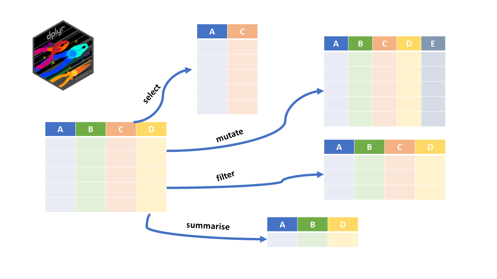
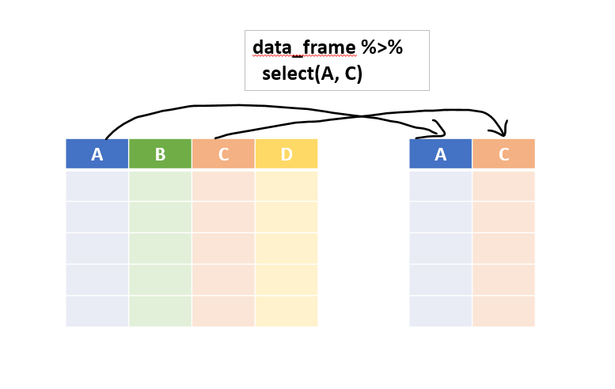
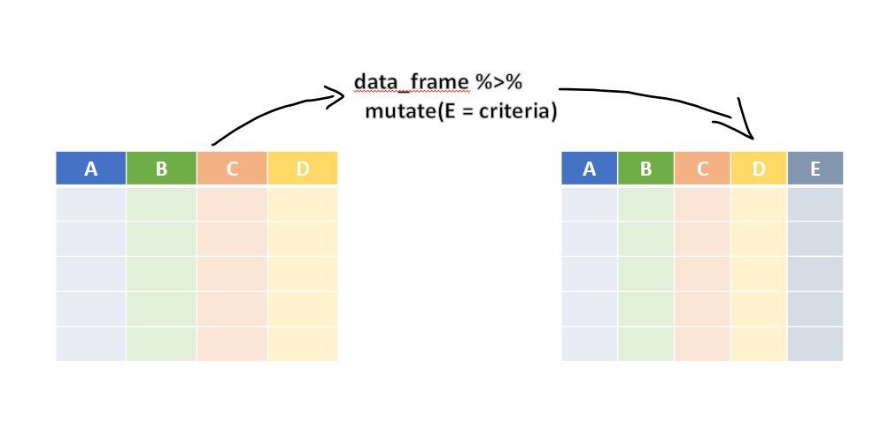
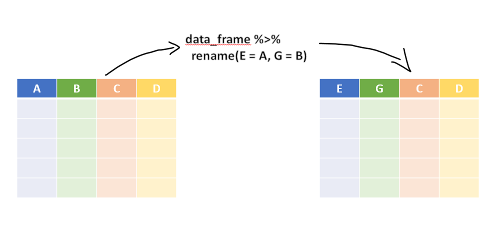
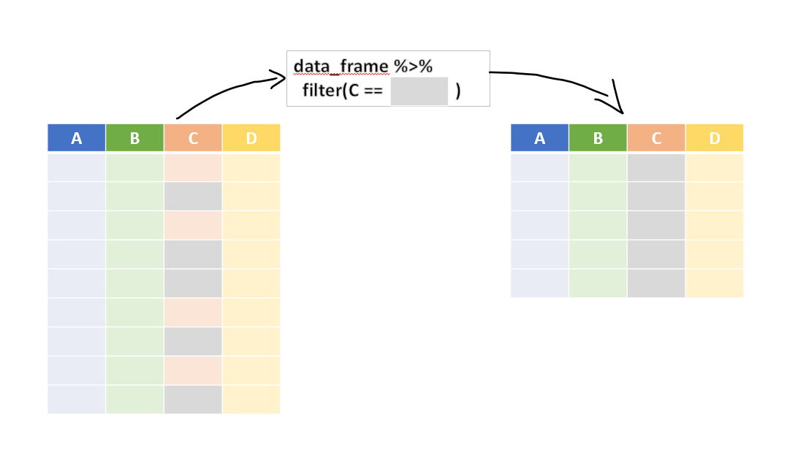
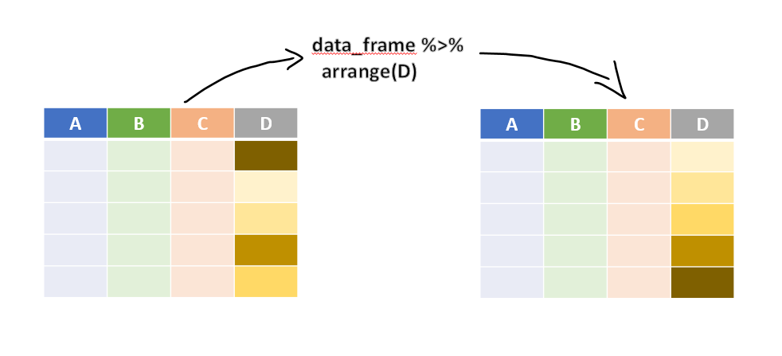
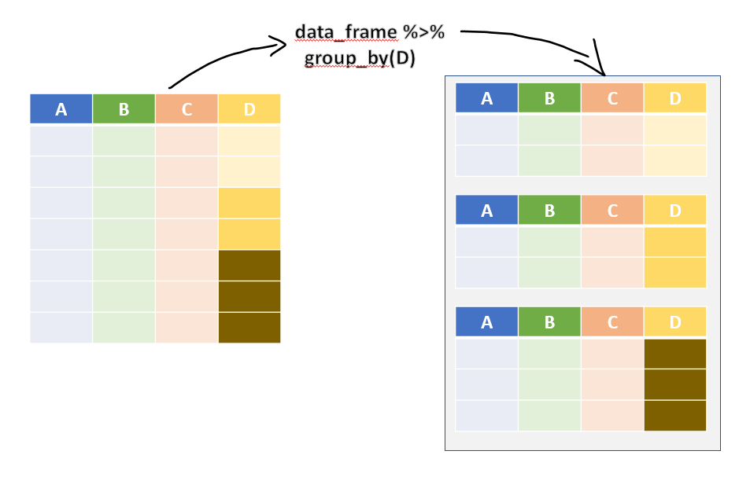

13 Transforming Data with dplyr
Suppose we receive the payment register of a Public Works division for 2024-25. It has a few hundred vouchers, or a few lakh, with a dozen columns each. Our questions are simple. Which vouchers were paid by the Nashik office? What did each office spend? Which bills were just below the sanction limit? Was GST charged at the right rate? Which were the ten largest payments?
To answer any of these, we must first transform the data. We select the columns we need, keep the rows that matter, create new columns, sort, and summarise by groups. Most of the work in any audit analysis is of this kind. The package dplyr,1 part of the core tidyverse, does all this with a small set of functions. They are easy to read, even for someone who does not know R.
In this chapter we learn these functions one by one, on a small payment register with a few irregularities planted in it. We find a voucher with the wrong GST rate, a vendor paid in several bills just below ₹1 lakh, and works paid beyond their sanctioned amount. By the end, we can write each audit test as one readable chain of steps.
Prerequisites
We load dplyr through tidyverse. In this book we join steps with the native pipe |>, which comes with R itself, from version 4.1 (Chapter 5). You will also see the older pipe %>% in many books and websites. For everyday use the two work alike.
The functions of dplyr are called verbs, because each of them does something to the data. The verbs can be divided into three kinds, depending on what they work on (Figure 13.1).
- ‘Row’ verbs, which work on rows
- ‘Column’ verbs, which work on columns
- ‘Group’ verbs, which work on a table split into groups

Many auditors know SQL from audit software or databases. The main dplyr verbs have direct SQL counterparts.
| SQL | dplyr |
|---|---|
SELECT col1, col2 |
select(col1, col2) |
WHERE condition |
filter(condition) |
ORDER BY col |
arrange(col) |
GROUP BY col with SUM(), COUNT()
|
summarise(..., .by = col) |
CASE WHEN ... THEN ... END |
case_when() |
SELECT DISTINCT |
distinct() |
JOIN |
left_join(), inner_join() and others (Chapter 14) |
In fact, dplyr code can be translated into SQL and run on a database, through the package dbplyr.
13.1 Our data, a payment register
Our register belongs to an imaginary Public Works division with four sub-division offices, at Pune, Nashik, Nagpur and Kolhapur. Each row is one payment voucher of the financial year 2024-25. All names are made up. Two kinds of irregularity are planted in the data, and we find them in this chapter. The code that creates the data is folded. New readers need not worry about it now. You may come back to it at the end of the chapter, when every verb in it will be familiar.
Code to create the payment register
set.seed(2025)
offices <- c("Pune", "Nashik", "Nagpur", "Kolhapur")
vendor_master <- tibble(
vendor_id = sprintf("V%02d", 1:10),
vendor_name = c("Shree Ganesh Builders", "Patil Constructions", "Deshmukh Traders",
"Sai Krupa Enterprises", "Jadhav Electricals", "Kulkarni & Sons",
"Mahalaxmi Suppliers", "Gawande Infra", "Shinde Transport",
"Om Stationers")
)
# Ordinary vouchers
n <- 110
vouchers <- tibble(
office = sample(offices, n, replace = TRUE, prob = c(0.3, 0.25, 0.25, 0.2)),
vendor_id = sample(vendor_master$vendor_id, n, replace = TRUE),
object_head = sample(c("Works", "Maintenance", "Supplies", "Office expenses"), n,
replace = TRUE, prob = c(0.35, 0.3, 0.2, 0.15)),
bill_date = as.Date("2024-04-01") + sample(0:340, n, replace = TRUE),
taxable = round(exp(runif(n, log(8000), log(1500000))), -2),
gst_pct = 18
)
# Planted 1. Five supply bills of one vendor at Nashik, each just below Rs 1 lakh
split_bills <- tibble(
office = "Nashik", vendor_id = "V04", object_head = "Supplies",
bill_date = as.Date("2025-01-06") + c(0, 3, 6, 9, 13),
taxable = c(84300, 83900, 84700, 82600, 84500), gst_pct = 18
)
vouchers <- bind_rows(vouchers, split_bills)
# Planted 2. GST charged at 28% instead of 18% on three bills
wrong_gst <- sample(which(vouchers$vendor_id != "V04"), 3)
vouchers$gst_pct[wrong_gst] <- 28
vouchers <- vouchers |>
mutate(voucher_date = bill_date + sample(5:30, n(), replace = TRUE),
amt_gst = round(taxable * gst_pct / 100),
amt_gross = taxable + amt_gst,
amt_tds = round(taxable * 0.02),
amt_net = amt_gross - amt_tds,
mode = if_else(amt_gross > 200000, "RTGS",
sample(c("NEFT", "Cheque"), n(), replace = TRUE,
prob = c(0.7, 0.3)))) |>
arrange(voucher_date) |>
mutate(voucher_no = sprintf("PV/24-25/%03d", row_number())) |>
left_join(vendor_master, by = "vendor_id") |>
select(voucher_no, voucher_date, office, vendor_id, vendor_name, object_head,
bill_date, amt_gross, amt_gst, amt_tds, amt_net, mode)Let us have a look at it with glimpse(), which shows every column on its own line, with its type and its first few values.
glimpse(vouchers)Rows: 115
Columns: 12
$ voucher_no <chr> "PV/24-25/001", "PV/24-25/002", "PV/24-25/003", "PV/24-25…
$ voucher_date <date> 2024-04-18, 2024-04-21, 2024-04-28, 2024-04-28, 2024-04-…
$ office <chr> "Nagpur", "Nagpur", "Nashik", "Nagpur", "Nagpur", "Nashik…
$ vendor_id <chr> "V02", "V01", "V09", "V07", "V06", "V08", "V04", "V01", "…
$ vendor_name <chr> "Patil Constructions", "Shree Ganesh Builders", "Shinde T…
$ object_head <chr> "Maintenance", "Supplies", "Supplies", "Office expenses",…
$ bill_date <date> 2024-04-11, 2024-04-04, 2024-04-08, 2024-04-20, 2024-04-…
$ amt_gross <dbl> 58292, 721334, 21594, 224790, 20532, 416776, 75874, 13711…
$ amt_gst <dbl> 8892, 110034, 3294, 34290, 3132, 63576, 11574, 20916, 712…
$ amt_tds <dbl> 988, 12226, 366, 3810, 348, 7064, 1286, 2324, 792, 26752,…
$ amt_net <dbl> 57304, 709108, 21228, 220980, 20184, 409712, 74588, 13479…
$ mode <chr> "NEFT", "RTGS", "NEFT", "RTGS", "NEFT", "RTGS", "Cheque",…The register has 115 vouchers, worth ₹411.79 lakh in all. The columns are these.
-
voucher_noandvoucher_dateidentify the payment voucher. -
officeis the sub-division office which made the payment. -
vendor_idandvendor_nametell us who was paid. -
object_headis the head of account, like works, maintenance or supplies. -
bill_dateis the date of the vendor’s bill. -
amt_grossis the bill amount including GST.amt_gstis the GST in it, andamt_tdsis the income tax deducted at source.amt_netis the amount actually paid, the gross amount less TDS. -
modeis the mode of payment, RTGS, NEFT or cheque.
Let us learn each verb now.
13.2 Column verb select()
Real datasets often have many columns, and for most tasks only a few of them are needed. select() (Figure 13.2) works on columns. Like SELECT in SQL, it selects the columns we name from a data frame. The basic syntax is select(data_frame, column_names, ...). With the pipe, it reads like this.
data_frame |>
select(column_name)
Let us keep only the names of the vendors.
vouchers |>
select(vendor_name)# A tibble: 115 × 1
vendor_name
<chr>
1 Patil Constructions
2 Shree Ganesh Builders
3 Shinde Transport
4 Mahalaxmi Suppliers
5 Kulkarni & Sons
6 Gawande Infra
7 Sai Krupa Enterprises
8 Shree Ganesh Builders
9 Kulkarni & Sons
10 Gawande Infra
# ℹ 105 more rowsNote that the output is still a data frame, unlike vouchers[['vendor_name']], which returns a vector. We can select several columns at once.
# A tibble: 6 × 2
voucher_no amt_gross
<chr> <dbl>
1 PV/24-25/001 58292
2 PV/24-25/002 721334
3 PV/24-25/003 21594
4 PV/24-25/004 224790
5 PV/24-25/005 20532
6 PV/24-25/006 416776We can also give column numbers instead of names. Column 4 is vendor_id and column 6 is object_head.
# A tibble: 6 × 2
vendor_id object_head
<chr> <chr>
1 V10 Office expenses
2 V05 Supplies
3 V10 Office expenses
4 V09 Works
5 V03 Maintenance
6 V04 Maintenance We can also use select() to reorder the columns, with the helper everything(), which means “all the other columns”. Let us bring the amount and the vendor to the front.
vouchers |>
select(amt_gross, vendor_name, everything()) |>
names() [1] "amt_gross" "vendor_name" "voucher_no" "voucher_date" "office"
[6] "vendor_id" "object_head" "bill_date" "amt_gst" "amt_tds"
[11] "amt_net" "mode" We may also mix column names and column numbers.
vouchers |>
select(3, 1, amt_net, everything()) |>
names() [1] "office" "voucher_no" "amt_net" "voucher_date" "vendor_id"
[6] "vendor_name" "object_head" "bill_date" "amt_gross" "amt_gst"
[11] "amt_tds" "mode" The operator : selects a range of consecutive columns. Here are the four amount columns, which sit side by side.
# A tibble: 4 × 4
amt_gross amt_gst amt_tds amt_net
<dbl> <dbl> <dbl> <dbl>
1 58292 8892 988 57304
2 721334 110034 12226 709108
3 21594 3294 366 21228
4 224790 34290 3810 220980Other selection helpers
Apart from everything(), there are other helpers which select columns by a condition on their names, so that we need not type every name. These are self explanatory.
-
starts_with('ABC')selects all columns whose names start withABC. -
ends_with('ABC')selects all columns whose names end withABC. -
contains('ABC')selects all columns whose names containABC. -
num_range('A', 1:3)selects the columns namedA1,A2andA3.
This is why a consistent naming of columns pays. All our amount columns start with amt_, and both date columns end with _date. So we can pick them as a group. This selects the date columns.
# A tibble: 115 × 2
voucher_date bill_date
<date> <date>
1 2024-04-18 2024-04-11
2 2024-04-21 2024-04-04
3 2024-04-28 2024-04-08
4 2024-04-28 2024-04-20
5 2024-04-30 2024-04-05
6 2024-05-06 2024-04-19
7 2024-05-07 2024-04-16
8 2024-05-11 2024-04-13
9 2024-05-13 2024-05-03
10 2024-05-13 2024-05-08
# ℹ 105 more rowsThis selects all the columns whose names contain "vendor".
# A tibble: 115 × 2
vendor_id vendor_name
<chr> <chr>
1 V02 Patil Constructions
2 V01 Shree Ganesh Builders
3 V09 Shinde Transport
4 V07 Mahalaxmi Suppliers
5 V06 Kulkarni & Sons
6 V08 Gawande Infra
7 V04 Sai Krupa Enterprises
8 V01 Shree Ganesh Builders
9 V06 Kulkarni & Sons
10 V08 Gawande Infra
# ℹ 105 more rowsUsing where(). This helper selects the columns for which a function, applied to the column’s values, returns TRUE. This selects all the numeric columns, which here are the four amount columns.
# A tibble: 115 × 4
amt_gross amt_gst amt_tds amt_net
<dbl> <dbl> <dbl> <dbl>
1 58292 8892 988 57304
2 721334 110034 12226 709108
3 21594 3294 366 21228
4 224790 34290 3810 220980
5 20532 3132 348 20184
6 416776 63576 7064 409712
7 75874 11574 1286 74588
8 137116 20916 2324 134792
9 46728 7128 792 45936
10 1578368 240768 26752 1551616
# ℹ 105 more rows
13.3 Column verb mutate()
This is perhaps the most important function of dplyr. It creates new columns, which are functions of one or more existing columns. Refer to Figure 13.3.

More than one column can be added at once, and a newly created column can be used to create another in the same step. Let us write the vendor names in capitals, work out the taxable value of each bill, and then the GST rate charged on it.
# A tibble: 115 × 7
voucher_no vendor_name amt_gross amt_gst vendor_upper taxable gst_rate
<chr> <chr> <dbl> <dbl> <chr> <dbl> <dbl>
1 PV/24-25/001 Patil Construct… 58292 8892 PATIL CONST… 49400 18
2 PV/24-25/002 Shree Ganesh Bu… 721334 110034 SHREE GANES… 611300 18
3 PV/24-25/003 Shinde Transport 21594 3294 SHINDE TRAN… 18300 18
4 PV/24-25/004 Mahalaxmi Suppl… 224790 34290 MAHALAXMI S… 190500 18
5 PV/24-25/005 Kulkarni & Sons 20532 3132 KULKARNI & … 17400 18
6 PV/24-25/006 Gawande Infra 416776 63576 GAWANDE INF… 353200 18
7 PV/24-25/007 Sai Krupa Enter… 75874 11574 SAI KRUPA E… 64300 18
8 PV/24-25/008 Shree Ganesh Bu… 137116 20916 SHREE GANES… 116200 18
9 PV/24-25/009 Kulkarni & Sons 46728 7128 KULKARNI & … 39600 18
10 PV/24-25/010 Gawande Infra 1578368 240768 GAWANDE INF… 1337600 18
# ℹ 105 more rowsThe column taxable, created in the second line, was used at once in the third. We use the GST rate again when we learn filter().
By default, new columns are added at the end of the data frame. The argument .before or .after places them elsewhere. There is a cousin of mutate(), transmute(), which keeps only the newly created columns, though mutate() with its argument .keep = "none" now does the same.
# A tibble: 115 × 2
voucher_no amt_lakh
<chr> <dbl>
1 PV/24-25/001 0.58
2 PV/24-25/002 7.21
3 PV/24-25/003 0.22
4 PV/24-25/004 2.25
5 PV/24-25/005 0.21
6 PV/24-25/006 4.17
7 PV/24-25/007 0.76
8 PV/24-25/008 1.37
9 PV/24-25/009 0.47
10 PV/24-25/010 15.8
# ℹ 105 more rowsGroup totals on every row. Another good use of mutate() is to calculate a summary and show it on each row. For example, the share of each of the first six vouchers in their total.
# A tibble: 6 × 4
voucher_no amt_gross total share_pct
<chr> <dbl> <dbl> <dbl>
1 PV/24-25/001 58292 1463318 4
2 PV/24-25/002 721334 1463318 49.3
3 PV/24-25/003 21594 1463318 1.5
4 PV/24-25/004 224790 1463318 15.4
5 PV/24-25/005 20532 1463318 1.4
6 PV/24-25/006 416776 1463318 28.5Two useful helper functions are
-
n(), which counts the number of rows, and -
n_distinct(), which counts the number of distinct values of a variable.
vouchers |>
select(voucher_no, office, vendor_id) |>
mutate(total_vouchers = n(),
vendors_paid = n_distinct(vendor_id)) |>
head()# A tibble: 6 × 5
voucher_no office vendor_id total_vouchers vendors_paid
<chr> <chr> <chr> <int> <int>
1 PV/24-25/001 Nagpur V02 115 10
2 PV/24-25/002 Nagpur V01 115 10
3 PV/24-25/003 Nashik V09 115 10
4 PV/24-25/004 Nagpur V07 115 10
5 PV/24-25/005 Nagpur V06 115 10
6 PV/24-25/006 Nashik V08 115 10
13.4 Column verb rename()
It renames columns. Refer to Figure 13.4 for an illustration.

See this example. The new name comes first.
# A tibble: 3 × 12
voucher_no voucher_date office vendor_id payee object_head bill_date
<chr> <date> <chr> <chr> <chr> <chr> <date>
1 PV/24-25/001 2024-04-18 Nagpur V02 Patil Const… Maintenance 2024-04-11
2 PV/24-25/002 2024-04-21 Nagpur V01 Shree Ganes… Supplies 2024-04-04
3 PV/24-25/003 2024-04-28 Nashik V09 Shinde Tran… Supplies 2024-04-08
# ℹ 5 more variables: amt_gross <dbl>, amt_gst <dbl>, amt_tds <dbl>,
# amt_net <dbl>, mode <chr>Note that select() can also rename columns, but it drops all the columns not selected. Check this.
13.5 Column verb relocate()
It moves a column, or a block of columns, to just before the column given in the argument .before, or just after the one given in .after. Let us move both date columns next to the voucher number, so that the bill date and the payment date can be read together.
# A tibble: 5 × 12
voucher_no voucher_date bill_date office vendor_id vendor_name object_head
<chr> <date> <date> <chr> <chr> <chr> <chr>
1 PV/24-25/001 2024-04-18 2024-04-11 Nagpur V02 Patil Const… Maintenance
2 PV/24-25/002 2024-04-21 2024-04-04 Nagpur V01 Shree Ganes… Supplies
3 PV/24-25/003 2024-04-28 2024-04-08 Nashik V09 Shinde Tran… Supplies
4 PV/24-25/004 2024-04-28 2024-04-20 Nagpur V07 Mahalaxmi S… Office exp…
5 PV/24-25/005 2024-04-30 2024-04-05 Nagpur V06 Kulkarni & … Maintenance
# ℹ 5 more variables: amt_gross <dbl>, amt_gst <dbl>, amt_tds <dbl>,
# amt_net <dbl>, mode <chr>
13.6 Row verb filter()
This verb subsets the data, that is, it keeps the rows which meet a condition. Refer to Figure 13.5 for an illustration.

Let us keep the vouchers of two offices.
# A tibble: 59 × 12
voucher_no voucher_date office vendor_id vendor_name object_head bill_date
<chr> <date> <chr> <chr> <chr> <chr> <date>
1 PV/24-25/003 2024-04-28 Nashik V09 Shinde Tra… Supplies 2024-04-08
2 PV/24-25/006 2024-05-06 Nashik V08 Gawande In… Supplies 2024-04-19
3 PV/24-25/008 2024-05-11 Kolha… V01 Shree Gane… Maintenance 2024-04-13
4 PV/24-25/010 2024-05-13 Nashik V08 Gawande In… Supplies 2024-05-08
5 PV/24-25/011 2024-05-14 Kolha… V10 Om Station… Maintenance 2024-05-02
6 PV/24-25/012 2024-05-16 Kolha… V09 Shinde Tra… Maintenance 2024-05-02
7 PV/24-25/015 2024-05-27 Nashik V09 Shinde Tra… Works 2024-05-01
8 PV/24-25/016 2024-05-30 Kolha… V06 Kulkarni &… Maintenance 2024-05-15
9 PV/24-25/017 2024-05-30 Kolha… V01 Shree Gane… Maintenance 2024-05-22
10 PV/24-25/018 2024-06-01 Nashik V05 Jadhav Ele… Works 2024-05-13
# ℹ 49 more rows
# ℹ 5 more variables: amt_gross <dbl>, amt_gst <dbl>, amt_tds <dbl>,
# amt_net <dbl>, mode <chr>Several conditions can be given at once. Here are the vouchers of Nashik of ₹5 lakh or more.
vouchers |>
filter(office == 'Nashik',
amt_gross >= 500000)# A tibble: 8 × 12
voucher_no voucher_date office vendor_id vendor_name object_head bill_date
<chr> <date> <chr> <chr> <chr> <chr> <date>
1 PV/24-25/010 2024-05-13 Nashik V08 Gawande Inf… Supplies 2024-05-08
2 PV/24-25/015 2024-05-27 Nashik V09 Shinde Tran… Works 2024-05-01
3 PV/24-25/042 2024-08-07 Nashik V08 Gawande Inf… Works 2024-07-17
4 PV/24-25/044 2024-08-16 Nashik V07 Mahalaxmi S… Office exp… 2024-07-29
5 PV/24-25/072 2024-10-31 Nashik V04 Sai Krupa E… Supplies 2024-10-18
6 PV/24-25/084 2024-12-15 Nashik V01 Shree Ganes… Maintenance 2024-11-26
7 PV/24-25/098 2025-01-23 Nashik V10 Om Statione… Office exp… 2025-01-09
8 PV/24-25/114 2025-03-27 Nashik V03 Deshmukh Tr… Maintenance 2025-03-07
# ℹ 5 more variables: amt_gross <dbl>, amt_gst <dbl>, amt_tds <dbl>,
# amt_net <dbl>, mode <chr>Note that these conditions apply together, as if joined by AND. For OR, use | explicitly. This counts the vouchers which are either of Nashik or of ₹5 lakh or more.
A first audit check. Now let us join mutate() and filter(). In our register, GST is charged at 18% on every bill. Any other rate needs an explanation. So let us work out the rate on each bill, and keep the bills where it is not 18%.
# A tibble: 3 × 6
voucher_no office vendor_name taxable amt_gst gst_rate
<chr> <chr> <chr> <dbl> <dbl> <dbl>
1 PV/24-25/015 Nashik Shinde Transport 731700 204876 28
2 PV/24-25/046 Nashik Mahalaxmi Suppliers 8400 2352 28
3 PV/24-25/078 Kolhapur Mahalaxmi Suppliers 19000 5320 283 bills carry GST at 28%. The excess GST on them comes to ₹75,910. The auditor would check the GST rate for these goods and services, and ask the office why the higher rate was paid.
Dropping rows with filter_out(), and missing values
filter() keeps the rows for which the condition is TRUE. It drops the rows where the condition is FALSE, and also those where it is NA. This matters a lot when we want to drop some rows. Suppose we want to drop the cancelled vouchers from a list of payments, and one voucher has no status recorded.
# A tibble: 4 × 3
voucher amount status
<int> <dbl> <chr>
1 1 500 Paid
2 2 25000 Paid
3 4 120000 Paid
4 6 NA Paid Voucher 5, a payment of ₹80,000, has silently disappeared, though it was not cancelled. For it, status == "Cancelled" is NA, and so is its negation, and filter() drops rows with NA. From version 1.2, dplyr has filter_out(), which drops the rows for which the condition is TRUE, and keeps everything else, including the rows where the condition is NA.
payments |> filter_out(status == "Cancelled")# A tibble: 5 × 3
voucher amount status
<int> <dbl> <chr>
1 1 500 Paid
2 2 25000 Paid
3 4 120000 Paid
4 5 80000 <NA>
5 6 NA Paid Now voucher 5 is kept, for us to examine. In audit, a record that quietly drops out of an analysis is a serious error, since the excluded records are often the very ones which need attention. So, to remove rows, prefer filter_out(), and to select rows, use filter().
dplyr 1.2 also added when_any() and when_all(), which combine several conditions with OR and AND respectively. They read more clearly than long chains of | and &, especially when each condition is itself complex.
13.7 Row verbs slice() / slice_*()
slice() and its cousins also keep rows, but by their position. So data_fr |> slice(1:5) keeps the first five rows of data_fr. See this example.
vouchers |>
slice(4:10) # rows 4 to 10# A tibble: 7 × 12
voucher_no voucher_date office vendor_id vendor_name object_head bill_date
<chr> <date> <chr> <chr> <chr> <chr> <date>
1 PV/24-25/004 2024-04-28 Nagpur V07 Mahalaxmi … Office exp… 2024-04-20
2 PV/24-25/005 2024-04-30 Nagpur V06 Kulkarni &… Maintenance 2024-04-05
3 PV/24-25/006 2024-05-06 Nashik V08 Gawande In… Supplies 2024-04-19
4 PV/24-25/007 2024-05-07 Nagpur V04 Sai Krupa … Works 2024-04-16
5 PV/24-25/008 2024-05-11 Kolhap… V01 Shree Gane… Maintenance 2024-04-13
6 PV/24-25/009 2024-05-13 Nagpur V06 Kulkarni &… Supplies 2024-05-03
7 PV/24-25/010 2024-05-13 Nashik V08 Gawande In… Supplies 2024-05-08
# ℹ 5 more variables: amt_gross <dbl>, amt_gst <dbl>, amt_tds <dbl>,
# amt_net <dbl>, mode <chr>Other members of the slice() family are
-
slice_head(n = 5), which keeps the first 5 rows. -
slice_tail(n = 10), which keeps the last 10 rows. -
slice_min()andslice_max(), which keep the rows with the lowest or highest values of a variable, respectively. The full syntax isslice_max(.data, order_by, ..., n, prop, with_ties = TRUE). -
slice_sample(), which selects rows at random. Its syntax isslice_sample(.data, ..., n, prop, weight_by = NULL, replace = FALSE). We use it for audit sampling in Chapter 27.
The number of rows must be given as a named argument, n = 5. slice_head(5) gives an error.
The five largest payments of the year are a natural starting point for any audit of payments.
# A tibble: 5 × 5
voucher_no office vendor_name object_head amt_gross
<chr> <chr> <chr> <chr> <dbl>
1 PV/24-25/019 Pune Om Stationers Supplies 1650938
2 PV/24-25/010 Nashik Gawande Infra Supplies 1578368
3 PV/24-25/102 Pune Om Stationers Works 1576362
4 PV/24-25/086 Kolhapur Shinde Transport Maintenance 1517598
5 PV/24-25/025 Nagpur Gawande Infra Supplies 1468628And the three smallest.
# A tibble: 3 × 5
voucher_no office vendor_name object_head amt_gross
<chr> <chr> <chr> <chr> <dbl>
1 PV/24-25/097 Nashik Mahalaxmi Suppliers Supplies 9794
2 PV/24-25/085 Nashik Mahalaxmi Suppliers Supplies 9912
3 PV/24-25/046 Nashik Mahalaxmi Suppliers Supplies 10752A random 5% of the vouchers, for detailed checking. set.seed() fixes the random draw, so that the same sample comes out every time, and a reviewer can repeat it.
set.seed(2022)
vouchers |>
slice_sample(prop = 0.05) # sample 5% of the rows# A tibble: 5 × 12
voucher_no voucher_date office vendor_id vendor_name object_head bill_date
<chr> <date> <chr> <chr> <chr> <chr> <date>
1 PV/24-25/100 2025-01-26 Nagpur V04 Sai Krupa … Works 2025-01-02
2 PV/24-25/051 2024-08-31 Kolhap… V10 Om Station… Maintenance 2024-08-17
3 PV/24-25/078 2024-11-16 Kolhap… V07 Mahalaxmi … Maintenance 2024-11-03
4 PV/24-25/055 2024-09-20 Nashik V10 Om Station… Works 2024-08-21
5 PV/24-25/075 2024-11-12 Nashik V06 Kulkarni &… Supplies 2024-10-13
# ℹ 5 more variables: amt_gross <dbl>, amt_gst <dbl>, amt_tds <dbl>,
# amt_net <dbl>, mode <chr>
13.8 Row verb arrange()
This verb also works on rows. It rearranges them in the order of one or more columns. Refer to Figure 13.6 for an illustration.

Let us sort the vouchers by the date of the bill, and look at the first five.
# A tibble: 5 × 12
voucher_no voucher_date office vendor_id vendor_name object_head bill_date
<chr> <date> <chr> <chr> <chr> <chr> <date>
1 PV/24-25/002 2024-04-21 Nagpur V01 Shree Gane… Supplies 2024-04-04
2 PV/24-25/005 2024-04-30 Nagpur V06 Kulkarni &… Maintenance 2024-04-05
3 PV/24-25/003 2024-04-28 Nashik V09 Shinde Tra… Supplies 2024-04-08
4 PV/24-25/001 2024-04-18 Nagpur V02 Patil Cons… Maintenance 2024-04-11
5 PV/24-25/008 2024-05-11 Kolhap… V01 Shree Gane… Maintenance 2024-04-13
# ℹ 5 more variables: amt_gross <dbl>, amt_gst <dbl>, amt_tds <dbl>,
# amt_net <dbl>, mode <chr>To sort in descending order, wrap the column in desc(). We may also sort by several columns. This sorts by office, and within each office, by amount, largest first.
# A tibble: 115 × 4
voucher_no office vendor_name amt_gross
<chr> <chr> <chr> <dbl>
1 PV/24-25/086 Kolhapur Shinde Transport 1517598
2 PV/24-25/104 Kolhapur Shinde Transport 1356410
3 PV/24-25/016 Kolhapur Kulkarni & Sons 964886
4 PV/24-25/026 Kolhapur Deshmukh Traders 870014
5 PV/24-25/052 Kolhapur Om Stationers 859748
6 PV/24-25/050 Kolhapur Mahalaxmi Suppliers 722514
7 PV/24-25/064 Kolhapur Patil Constructions 693250
8 PV/24-25/038 Kolhapur Gawande Infra 535838
9 PV/24-25/017 Kolhapur Shree Ganesh Builders 364384
10 PV/24-25/027 Kolhapur Gawande Infra 325444
# ℹ 105 more rows
13.9 Group verb group_by()
It is hard to find a data analyst who does not use group_by(). It groups the rows by the values of one or more variables. The result is still a data frame, but its rows are now grouped. Refer to Figure 13.7 for an illustration. The verbs we learnt above then work within each group separately.

Note the output of this simple example.
vouchers |>
group_by(office)# A tibble: 115 × 12
# Groups: office [4]
voucher_no voucher_date office vendor_id vendor_name object_head bill_date
<chr> <date> <chr> <chr> <chr> <chr> <date>
1 PV/24-25/001 2024-04-18 Nagpur V02 Patil Cons… Maintenance 2024-04-11
2 PV/24-25/002 2024-04-21 Nagpur V01 Shree Gane… Supplies 2024-04-04
3 PV/24-25/003 2024-04-28 Nashik V09 Shinde Tra… Supplies 2024-04-08
4 PV/24-25/004 2024-04-28 Nagpur V07 Mahalaxmi … Office exp… 2024-04-20
5 PV/24-25/005 2024-04-30 Nagpur V06 Kulkarni &… Maintenance 2024-04-05
6 PV/24-25/006 2024-05-06 Nashik V08 Gawande In… Supplies 2024-04-19
7 PV/24-25/007 2024-05-07 Nagpur V04 Sai Krupa … Works 2024-04-16
8 PV/24-25/008 2024-05-11 Kolha… V01 Shree Gane… Maintenance 2024-04-13
9 PV/24-25/009 2024-05-13 Nagpur V06 Kulkarni &… Supplies 2024-05-03
10 PV/24-25/010 2024-05-13 Nashik V08 Gawande In… Supplies 2024-05-08
# ℹ 105 more rows
# ℹ 5 more variables: amt_gross <dbl>, amt_gst <dbl>, amt_tds <dbl>,
# amt_net <dbl>, mode <chr>Note that the output now has 4 groups, one for each office, though the data shown looks the same. If the grouping column had a missing value, NA, it would form a group of its own.
So grouping is useful only in combination with other verbs. How many vouchers has each vendor received? Let us show that count on every row.
# A tibble: 115 × 3
# Groups: vendor_name [10]
voucher_no vendor_name vouchers_of_vendor
<chr> <chr> <int>
1 PV/24-25/001 Patil Constructions 7
2 PV/24-25/002 Shree Ganesh Builders 10
3 PV/24-25/003 Shinde Transport 9
4 PV/24-25/004 Mahalaxmi Suppliers 14
5 PV/24-25/005 Kulkarni & Sons 8
6 PV/24-25/006 Gawande Infra 14
7 PV/24-25/007 Sai Krupa Enterprises 22
8 PV/24-25/008 Shree Ganesh Builders 10
9 PV/24-25/009 Kulkarni & Sons 8
10 PV/24-25/010 Gawande Infra 14
# ℹ 105 more rowsGrouping also lets us sample within groups. This draws two vouchers from each office, so that every office is covered.
set.seed(123)
vouchers |>
group_by(office) |>
slice_sample(n = 2) |>
select(voucher_no, office, vendor_name, amt_gross)# A tibble: 8 × 4
# Groups: office [4]
voucher_no office vendor_name amt_gross
<chr> <chr> <chr> <dbl>
1 PV/24-25/052 Kolhapur Om Stationers 859748
2 PV/24-25/065 Kolhapur Shinde Transport 33748
3 PV/24-25/035 Nagpur Mahalaxmi Suppliers 21358
4 PV/24-25/004 Nagpur Mahalaxmi Suppliers 224790
5 PV/24-25/043 Nashik Sai Krupa Enterprises 13452
6 PV/24-25/068 Nashik Sai Krupa Enterprises 206854
7 PV/24-25/089 Pune Shree Ganesh Builders 24898
8 PV/24-25/048 Pune Sai Krupa Enterprises 1235460Also note that the grouping variable(s) are always kept in the output. If we leave them out of select(), dplyr adds them back, and tells us so.
Adding missing grouping variables: `office`# A tibble: 6 × 2
# Groups: office [2]
office amt_gross
<chr> <dbl>
1 Nagpur 58292
2 Nagpur 721334
3 Nashik 21594
4 Nagpur 224790
5 Nagpur 20532
6 Nashik 416776
13.10 Group verb summarise()
This verb creates one summary row for each group, if the data is grouped, and otherwise one row for the whole data. First the whole register.
And now one row for each office, with the number of vouchers and the total in lakh.
# A tibble: 4 × 3
office vouchers total_lakh
<chr> <int> <dbl>
1 Kolhapur 27 95.2
2 Nagpur 28 107.
3 Nashik 32 101.
4 Pune 28 108. If an amount column has even one NA, sum() returns NA for the whole group. Adding na.rm = TRUE gives a total, but the missing amounts are then left out without any message. Count them separately with sum(is.na(amount)), and report them along with the total.
13.11 Group verb ungroup()
After group_by() and a verb like mutate() or slice(), the result is still grouped. Later steps usually need ungrouped data, and a forgotten grouping is a common cause of wrong results. The function ungroup() removes the grouping.
set.seed(123)
vouchers |>
group_by(office) |>
slice_sample(n = 2) |>
ungroup()# A tibble: 8 × 12
voucher_no voucher_date office vendor_id vendor_name object_head bill_date
<chr> <date> <chr> <chr> <chr> <chr> <date>
1 PV/24-25/052 2024-09-04 Kolhap… V10 Om Station… Supplies 2024-08-07
2 PV/24-25/065 2024-10-14 Kolhap… V09 Shinde Tra… Works 2024-09-23
3 PV/24-25/035 2024-07-20 Nagpur V07 Mahalaxmi … Maintenance 2024-07-08
4 PV/24-25/004 2024-04-28 Nagpur V07 Mahalaxmi … Office exp… 2024-04-20
5 PV/24-25/043 2024-08-15 Nashik V04 Sai Krupa … Works 2024-07-16
6 PV/24-25/068 2024-10-25 Nashik V04 Sai Krupa … Office exp… 2024-10-12
7 PV/24-25/089 2025-01-02 Pune V01 Shree Gane… Maintenance 2024-12-20
8 PV/24-25/048 2024-08-22 Pune V04 Sai Krupa … Office exp… 2024-08-05
# ℹ 5 more variables: amt_gross <dbl>, amt_gst <dbl>, amt_tds <dbl>,
# amt_net <dbl>, mode <chr>
13.12 The argument .by in mutate(), summarise() and other verbs
Grouping the data, doing the step, and then ungrouping it is somewhat cumbersome. Since dplyr version 1.1.0, the functions mutate(), summarise(), filter(), slice() and others have an argument .by, which groups the data for that one step only. So the following two pieces of code give the same result, the largest voucher of each office.
# A tibble: 4 × 4
voucher_no office vendor_name amt_gross
<chr> <chr> <chr> <dbl>
1 PV/24-25/086 Kolhapur Shinde Transport 1517598
2 PV/24-25/025 Nagpur Gawande Infra 1468628
3 PV/24-25/010 Nashik Gawande Infra 1578368
4 PV/24-25/019 Pune Om Stationers 1650938# A tibble: 4 × 4
voucher_no office vendor_name amt_gross
<chr> <chr> <chr> <dbl>
1 PV/24-25/025 Nagpur Gawande Infra 1468628
2 PV/24-25/010 Nashik Gawande Infra 1578368
3 PV/24-25/086 Kolhapur Shinde Transport 1517598
4 PV/24-25/019 Pune Om Stationers 1650938Both give the same four vouchers. Only the order of the rows differs. group_by() sorts the groups, while by keeps them in the order in which they first appear in the data. (The slice_*() functions spell the argument by, without the dot.)
With .by, the result is never left grouped, so there is nothing to forget. We use it throughout this book.
13.13 Group verb reframe()
summarise() must return exactly one row for each group. Sometimes we want more. For example, the quartiles of the bill amounts of each office give three numbers per office. summarise() refuses this, and suggests reframe().
Error in `summarise()`:
ℹ In argument: `q = quantile(amt_gross, c(0.25, 0.5, 0.75))`.
ℹ In group 1: `office = "Nagpur"`.
Caused by error:
! `q` must be size 1, not 3.
ℹ To return more or less than 1 row per group, use `reframe()`.reframe() works like summarise(), but allows any number of rows per group.
# A tibble: 12 × 3
office probability amount_quantile
<chr> <dbl> <dbl>
1 Nagpur 0.25 45696.
2 Nagpur 0.5 177885
3 Nagpur 0.75 630976.
4 Nashik 0.25 48056.
5 Nashik 0.5 99828
6 Nashik 0.75 438252
7 Kolhapur 0.25 27795
8 Kolhapur 0.5 137116
9 Kolhapur 0.75 614544
10 Pune 0.25 53542.
11 Pune 0.5 115522
12 Pune 0.75 530794.
13.14 Other useful functions in dplyr
if_else()
This function works much like base R’s ifelse(), with two important differences.
- It has an extra argument,
missing, for the value to use when the condition isNA. (See the first example.) - It is strict about types. The values for
TRUEandFALSEmust be of the same type. (See the second example.)
Take a few entries from a ledger. A positive amount is a payment, a negative one is a recovery, and one entry has no amount.
[1] "payment" "recovery" "payment" "payment" "not recorded"Now let us mix text and a number.
if_else(amount >= 0, "payment", 0)Error in `if_else()`:
! Can't combine `true` <character> and `false` <double>.if_else() stops with an error. Base R’s ifelse() does not complain. It silently turns the 0 into the text "0".
ifelse(amount >= 0, "payment", 0)[1] "payment" "0" "payment" "payment" NA The strictness of if_else() prevents such silent mistakes, which is why we prefer it. It is also much faster on large data.
case_when()
Several conditions can be nested inside ifelse() or if_else(), but such code is hard to read. case_when() is a simpler alternative, where the conditions are listed one after the other. The first condition which is TRUE decides the value. The syntax is
case_when(
condition1 ~ value_if_true,
condition2 ~ value_if_true,
...,
.default = value_if_all_above_are_false
)Suppose that, in our division, the sub-divisional officer may sanction a bill of up to ₹1 lakh. The Executive Engineer may sanction up to ₹10 lakh, and larger bills need the Superintending Engineer. Let us find who should have sanctioned each bill.
# A tibble: 6 × 3
voucher_no amt_gross sanction_by
<chr> <dbl> <chr>
1 PV/24-25/001 58292 Sub-divisional officer
2 PV/24-25/002 721334 Executive Engineer
3 PV/24-25/003 21594 Sub-divisional officer
4 PV/24-25/004 224790 Executive Engineer
5 PV/24-25/005 20532 Sub-divisional officer
6 PV/24-25/006 416776 Executive Engineer The order of the conditions matters. A bill of ₹50,000 is also below ₹10 lakh, but the first condition catches it. The function count() counts the rows for each value, and is a short form of summarise(n = n(), .by = ...).
vouchers |>
count(sanction_by)# A tibble: 3 × 2
sanction_by n
<chr> <int>
1 Executive Engineer 51
2 Sub-divisional officer 53
3 Superintending Engineer 11Older code writes TRUE ~ value as the last line, instead of .default. Both work.
recode_values() and replace_values()
case_when() uses logical conditions on the left-hand side of each formula. Often, we only want to match values. For this, dplyr 1.2 introduced recode_values(), which replaces the earlier case_match(). (case_match() is deprecated, and you may see it in older code.) Its syntax is like
recode_values(
x, # A vector whose values are to be matched
..., # value(s) ~ new value
default = NULL # Value if no match is found
)For example, the mode of payment in our register is RTGS, NEFT or cheque. For a report, we may want only two kinds, electronic and paper.
vouchers |>
mutate(mode_type = recode_values(mode,
c("RTGS", "NEFT") ~ "Electronic",
"Cheque" ~ "Paper")) |>
count(mode, mode_type)# A tibble: 3 × 3
mode mode_type n
<chr> <chr> <int>
1 Cheque Paper 18
2 NEFT Electronic 48
3 RTGS Electronic 49recode_values() also accepts a lookup table, through the arguments from and to. With unmatched = "error", it stops if any value is not found in the table, instead of quietly returning NA. This is a safe way to convert codes into names.
dept_codes <- tibble(code = c("PW", "HE", "ED"),
name = c("Public Works", "Health", "Education"))
recode_values(c("HE", "PW", "XX"), from = dept_codes$code, to = dept_codes$name,
unmatched = "error")Error in `recode_values()`:
! Each location must be matched.
✖ Location 3 is unmatched.The unknown code XX is reported at once. Its sister function, replace_values(), changes only the matched values and keeps the rest as they are. It is handy for standardising a few variants in otherwise clean data.
heads <- c("PWD", "P.W.D.", "Public Works", "Health", "Hlth", "Education")
replace_values(heads,
c("PWD", "P.W.D.") ~ "Public Works",
"Hlth" ~ "Health")[1] "Public Works" "Public Works" "Public Works" "Health" "Health"
[6] "Education"
13.15 Functional programming in dplyr through across()
Often we want to do the same thing to many columns. Round all amount columns, convert all date columns, or find the total of every numeric column. Writing the same line for each column is tedious and error prone. across() applies a function to many columns at once, inside mutate() or summarise(). It has two main arguments.
-
.cols, the columns, chosen with any of the selection helpers we learnt withselect(), likewhere(is.numeric)orstarts_with("amt_"). -
.fns, a function, or a list of functions, to apply to each of them.
Let us take a small set of bills, with several amount columns in paise, as bill data often has.
Applying one function to many columns. Round all the amount columns to whole rupees.
bills |>
mutate(across(starts_with("amt_"), round))# A tibble: 4 × 5
bill_no amt_gross amt_gst amt_tds amt_net
<chr> <dbl> <dbl> <dbl> <dbl>
1 B-101 118000 18000 2000 116000
2 B-102 59000 9000 1000 58000
3 B-103 236000 36000 4000 232000
4 B-104 47200 7200 -800 46400Look at the TDS of bill B-102. It was 1000.5, and round() has made it 1000, not 1001. R’s round() follows the international standard of rounding a half to the nearest even number. So round(0.5) is 0, round(1.5) is 2 and round(2.5) is also 2. Government accounts, on the other hand, usually round 50 paise and above up to the next rupee. To match that convention, use janitor::round_half_up().
Such differences are small, but when our totals differ from the auditee’s by a few rupees, the rounding rule is the first thing to check.
Applying several functions. With a named list of functions, summarise() gives each combination. The argument .names sets the names of the new columns, where {.col} stands for the column name and {.fn} for the function name.
bills |>
summarise(across(starts_with("amt_"),
list(total = sum, max = max),
.names = "{.col}_{.fn}"))# A tibble: 1 × 8
amt_gross_total amt_gross_max amt_gst_total amt_gst_max amt_tds_total
<dbl> <dbl> <dbl> <dbl> <dbl>
1 460201. 236000. 70200. 36000 6200.
# ℹ 3 more variables: amt_tds_max <dbl>, amt_net_total <dbl>, amt_net_max <dbl>The same works on our register, office by office. Here is the total of every amount column of each office, in lakh.
vouchers |>
summarise(across(starts_with("amt_"), \(x) round(sum(x) / 1e5, 2)),
.by = office)# A tibble: 4 × 5
office amt_gross amt_gst amt_tds amt_net
<chr> <dbl> <dbl> <dbl> <dbl>
1 Nagpur 107. 16.4 1.82 106.
2 Nashik 101. 16.1 1.7 99.6
3 Kolhapur 95.2 14.5 1.61 93.6
4 Pune 108. 16.4 1.83 106. A function written on the spot. The last example used a function of our own, written in the short form \(x), which we learnt in Section 7.5. Here is another, which converts each amount column of the bills into lakh, in new columns.
# A tibble: 4 × 5
bill_no amt_gross_lakh amt_gst_lakh amt_tds_lakh amt_net_lakh
<chr> <dbl> <dbl> <dbl> <dbl>
1 B-101 1.18 0.18 0.02 1.16
2 B-102 0.59 0.09 0.01 0.58
3 B-103 2.36 0.36 0.04 2.32
4 B-104 0.47 0.07 -0.01 0.46Conditions on many columns, if_any() and if_all(). These are the cousins of across() for filter(). if_any() keeps the rows where the condition is true for any of the columns, and if_all() where it is true for all of them. For example, bills with any negative amount.
bills |>
filter(if_any(starts_with("amt_"), \(x) x < 0))# A tibble: 1 × 5
bill_no amt_gross amt_gst amt_tds amt_net
<chr> <dbl> <dbl> <dbl> <dbl>
1 B-104 47200 7200 -800 46400Bill B-104 has a negative TDS, which needs explaining.
13.16 Window functions
With group_by() or .by, we can create windows in the data, and do calculations within each window separately. dplyr has several useful window functions, which work within such windows.
-
row_number()gives the row number. -
dense_rank(),min_rank(),percent_rank(),ntile()andcume_dist()give different kinds of ranks. See?dplyr::rankingfor the complete reference. -
lead()andlag()give the next or previous value in the window. -
consecutive_id()gives an identifier which increases every time a variable (or combination of variables) changes. -
cumsum(), from base R, gives the running total.
These functions are very helpful with time-ordered data, like payments or entries in a ledger.
Row numbers and ranks. Let us first see how the ranks differ, on five bill amounts. Two of them are equal, and one is missing.
bill_amounts <- tibble(amount = c(50000, 12000, 18000, 12000, NA))
bill_amounts |>
mutate(
row = row_number(),
min_rank = min_rank(amount),
dense_rank = dense_rank(amount),
perc_rank = percent_rank(amount),
cume_dist = cume_dist(amount)
)# A tibble: 5 × 6
amount row min_rank dense_rank perc_rank cume_dist
<dbl> <int> <int> <int> <dbl> <dbl>
1 50000 1 4 3 1 1
2 12000 2 1 1 0 0.5
3 18000 3 3 2 0.667 0.75
4 12000 4 1 1 0 0.5
5 NA 5 NA NA NA NA The two bills of ₹12,000 share rank 1. min_rank() then jumps to 3, while dense_rank() goes on to 2. The missing amount gets no rank at all.
Previous and next values. With lag() and lead() we can put the previous and next voucher of the same vendor, at the same office, on each row. Let us look at one vendor of the Nashik office.
vouchers |>
select(voucher_no, office, vendor_name, bill_date, amt_gross) |>
arrange(bill_date) |>
mutate(prev_bill_date = lag(bill_date),
next_amount = lead(amt_gross),
.by = c(office, vendor_name)) |>
filter(office == "Nashik", vendor_name == "Sai Krupa Enterprises") |>
select(voucher_no, bill_date, amt_gross, prev_bill_date, next_amount)# A tibble: 12 × 5
voucher_no bill_date amt_gross prev_bill_date next_amount
<chr> <date> <dbl> <date> <dbl>
1 PV/24-25/031 2024-06-21 13216 NA 13452
2 PV/24-25/043 2024-07-16 13452 2024-06-21 145258
3 PV/24-25/053 2024-08-22 145258 2024-07-16 182074
4 PV/24-25/054 2024-08-25 182074 2024-08-22 206854
5 PV/24-25/068 2024-10-12 206854 2024-08-25 518020
6 PV/24-25/072 2024-10-18 518020 2024-10-12 65136
7 PV/24-25/070 2024-10-24 65136 2024-10-18 99474
8 PV/24-25/095 2025-01-06 99474 2024-10-24 99002
9 PV/24-25/099 2025-01-09 99002 2025-01-06 99946
10 PV/24-25/107 2025-01-12 99946 2025-01-09 97468
11 PV/24-25/105 2025-01-15 97468 2025-01-12 99710
12 PV/24-25/108 2025-01-19 99710 2025-01-15 NAThe bills of January 2025 came every three or four days, each a little below ₹1 lakh. We come back to them in the audit use case below.
Runs of the same value. consecutive_id() numbers the runs in a column. Take six entries of a cash book, in the order they were written.
cash_book <- tibble(
entry = 1:6,
type = c("Receipt", "Payment", "Payment", "Receipt", "Receipt", "Payment"),
amount = c(50000, 12000, 8000, 30000, 15000, 40000)
)
cash_book |>
mutate(run = consecutive_id(type))# A tibble: 6 × 4
entry type amount run
<int> <chr> <dbl> <int>
1 1 Receipt 50000 1
2 2 Payment 12000 2
3 3 Payment 8000 2
4 4 Receipt 30000 3
5 5 Receipt 15000 3
6 6 Payment 40000 4Each time the type changes, the run number goes up by one. Grouping by run then gives the total of each unbroken run of receipts or payments.
13.17 Audit use case, bills split to stay within a sanction limit
We saw with case_when() that the sub-divisional officer may sanction a bill of up to ₹1 lakh. A purchase of more than that needs the Executive Engineer. An office may avoid the higher sanction by splitting one purchase into several bills, each just below ₹1 lakh. Let us look for this.
We keep the bills between ₹90,000 and ₹1 lakh. We then count them, and total them, for each office, vendor and month of the bill. Several such bills of one vendor in one month are a warning sign.
split_check <- vouchers |>
filter(amt_gross >= 90000, amt_gross < 100000) |>
mutate(bill_month = format(bill_date, "%Y-%m")) |>
summarise(bills = n(),
total = sum(amt_gross),
first_bill = min(bill_date),
last_bill = max(bill_date),
.by = c(office, vendor_name, bill_month)) |>
arrange(desc(bills))
split_check# A tibble: 4 × 7
office vendor_name bill_month bills total first_bill last_bill
<chr> <chr> <chr> <int> <dbl> <date> <date>
1 Nashik Sai Krupa Enterprises 2025-01 5 495600 2025-01-06 2025-01-19
2 Pune Shree Ganesh Builders 2024-10 1 95580 2024-10-23 2024-10-23
3 Pune Deshmukh Traders 2024-11 1 95934 2024-11-16 2024-11-16
4 Pune Om Stationers 2025-01 1 95580 2025-01-03 2025-01-034 groups have at least one bill in this range. Only one has more than one bill. Sai Krupa Enterprises raised 5 bills at Nashik between 06 January and 19 January 2025. Together they come to ₹4.96 lakh, well above the limit of ₹1 lakh. The other groups have a single bill each near the limit, which is to be expected by chance.
The pipe used filter(), mutate(), summarise() with .by, and arrange(), in that order. Each line is one step of the audit test.
The data cannot tell us whether the five bills were for one purchase. The auditor would next call for the files. Was there one indent, split into five bills? Were the items the same? Was the sanction of the Executive Engineer needed and not taken? The answers go into the working papers, with copies of the bills.
13.18 Audit use case, payments beyond the sanctioned amount
Let us put several verbs together on another audit question. Each work has a sanctioned amount, and several running bills are paid against it over time. Payments beyond the sanction are irregular. Which bill crossed the sanction, and by how much?
The code below creates the sanctioned amounts of three works and their running bills. Click on it to see the code.
Code to create the works and running bills tables
works <- tibble(work_id = c("W-1", "W-2", "W-3"),
sanctioned = c(500000, 300000, 800000))
ra_bills <- tibble(
work_id = c("W-1", "W-1", "W-1", "W-2", "W-2", "W-3", "W-3", "W-3", "W-3"),
bill_no = c(1, 2, 3, 1, 2, 1, 2, 3, 4),
paid_on = as.Date(c("2024-05-10", "2024-08-02", "2024-11-20", "2024-06-15", "2024-10-01",
"2024-04-12", "2024-07-30", "2024-10-18", "2025-01-22")),
amount = c(200000, 180000, 160000, 150000, 120000, 250000, 260000, 200000, 150000)
)
works# A tibble: 3 × 2
work_id sanctioned
<chr> <dbl>
1 W-1 500000
2 W-2 300000
3 W-3 800000Code to create the works and running bills tables
ra_bills# A tibble: 9 × 4
work_id bill_no paid_on amount
<chr> <dbl> <date> <dbl>
1 W-1 1 2024-05-10 200000
2 W-1 2 2024-08-02 180000
3 W-1 3 2024-11-20 160000
4 W-2 1 2024-06-15 150000
5 W-2 2 2024-10-01 120000
6 W-3 1 2024-04-12 250000
7 W-3 2 2024-07-30 260000
8 W-3 3 2024-10-18 200000
9 W-3 4 2025-01-22 150000# A tibble: 2 × 7
work_id bill_no paid_on amount sanctioned paid_so_far beyond_sanction
<chr> <dbl> <date> <dbl> <dbl> <dbl> <dbl>
1 W-1 3 2024-11-20 160000 500000 540000 40000
2 W-3 4 2025-01-22 150000 800000 860000 60000In one pipe, we joined the sanctioned amounts (joins are explained in Chapter 14), sorted the bills by date within each work, calculated the running total for each work with cumsum() and .by, and kept only the bills where the running total exceeded the sanction. Work W-1 crossed its sanction with bill 3, by ₹40,000. Work W-3 crossed it with bill 4, by ₹60,000. Work W-2 stayed within its sanction.
The auditor would next ask whether a fresh sanction for the higher amount was obtained before these bills were paid. If not, the excess of ₹1 lakh is an irregular payment, to be reported.
Write each analysis as one readable pipe, from the raw data to the exception list, as above. The pipe is then the documentation of the test. A reviewer can read it from top to bottom, and see exactly what was done.
13.19 A suggested workflow
-
Keep only the columns you need. Use
select()to pick the useful columns from a wide file received from the auditee. Userename()to give them clear names. -
Create the columns the test needs. Use
mutate()to add columns like the amount in lakh, the GST rate, or a flag made withif_else()orcase_when(). Useacross()when the same change applies to many amount columns. -
Keep or drop rows with care. Use
filter()to select rows andfilter_out()to remove them, like cancelled vouchers. Check that no row with a missing value has quietly dropped out. -
Summarise by groups. Use
summarise()with.byto get totals by office, vendor or month. Usen(),n_distinct()andcount()for counts. -
Use window functions for running checks. Sort with
arrange(), then usecumsum(),lag()or ranks within each group with.by. This finds, for example, the running bill which crossed the sanctioned amount. -
Pick out the exceptions. End the pipe with
filter()orslice_max()to list the cases needing attention. Useslice_sample()to draw a sample for detailed checking. - Reconcile the totals. Compare the number of rows and the totals with the auditee’s figures. If they differ by a few rupees, check the rounding rule first.
- Keep the pipe as your working paper. Write each test as one readable pipe, from the raw data to the exception list. A reviewer can then follow every step.
filter() silently drops the rows where the condition is NA. Records which quietly drop out of an analysis are often the very ones which need attention. Use filter_out() to remove rows, and check the row count and totals after each step.
13.20 Where next
Real audit data rarely comes in one table. The vendor names may be in a vendor master, and the sanctions in a separate register, as in the last use case. Chapter 14 shows how to bring such tables together.
13.21 Summary of functions used
| Function | Package | What it does |
|---|---|---|
glimpse() |
dplyr | Show every column, with its type and first values |
select(), rename(), relocate()
|
dplyr | Choose, rename and move columns |
starts_with(), ends_with(), contains(), num_range(), where(), everything()
|
dplyr (tidyselect) | Helpers to choose columns by name or type |
mutate(), transmute()
|
dplyr | Create new columns |
filter(), filter_out(), when_any(), when_all()
|
dplyr | Keep or drop rows by conditions |
slice(), slice_head(), slice_tail(), slice_min(), slice_max(), slice_sample()
|
dplyr | Keep rows by position, by value, or at random |
arrange(), desc()
|
dplyr | Sort rows |
group_by(), ungroup(), .by
|
dplyr | Group and ungroup rows |
summarise(), reframe()
|
dplyr | One summary row per group, or any number of rows per group |
n(), n_distinct(), count()
|
dplyr | Count rows and distinct values |
if_else(), case_when()
|
dplyr | Values by conditions, safely |
recode_values(), replace_values()
|
dplyr | Recode or replace values by matching |
across(), if_any(), if_all()
|
dplyr | The same operation, or condition, on many columns |
row_number(), min_rank(), dense_rank(), percent_rank(), cume_dist()
|
dplyr | Row numbers and ranks |
lag(), lead(), consecutive_id(), cumsum()
|
dplyr, base R | Previous and next values, runs, and running totals |
left_join() |
dplyr | Add columns from another table by a key |
round_half_up() |
janitor | Round halves up, as in government accounts |